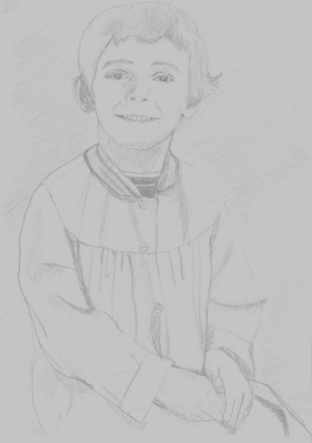
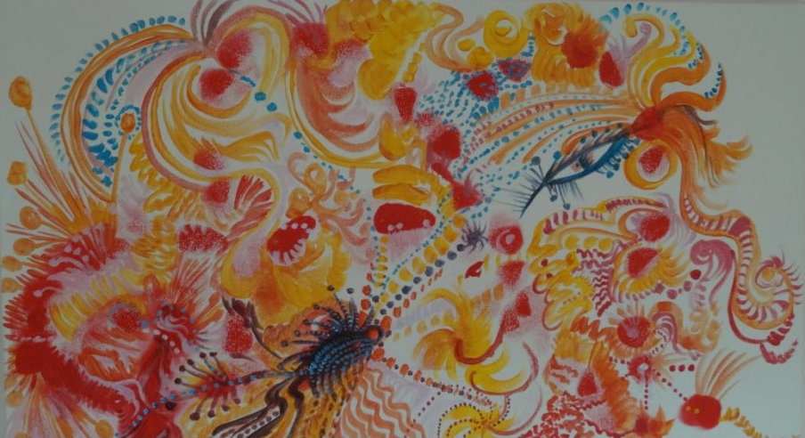
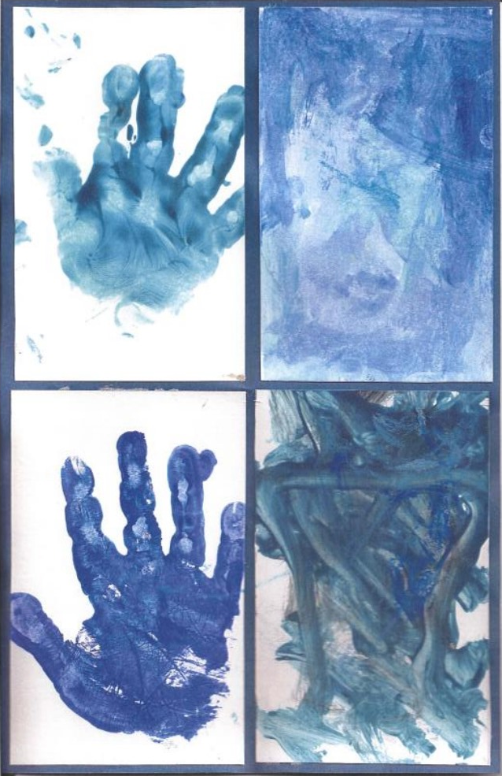
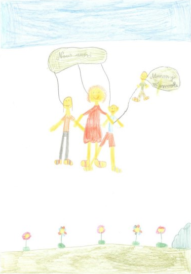
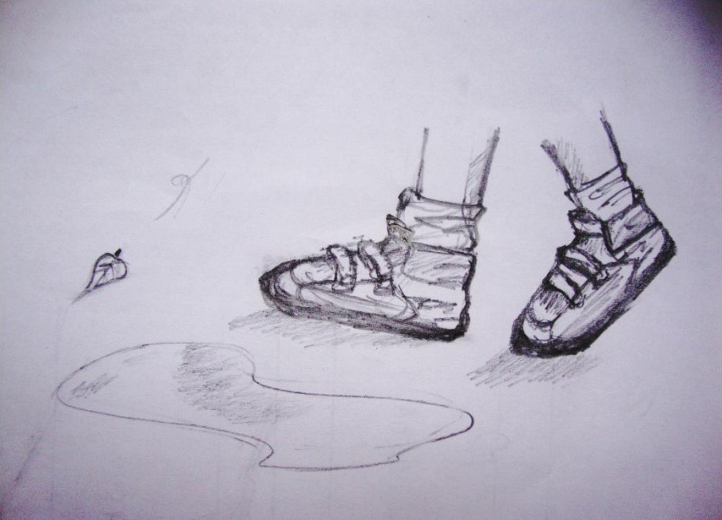
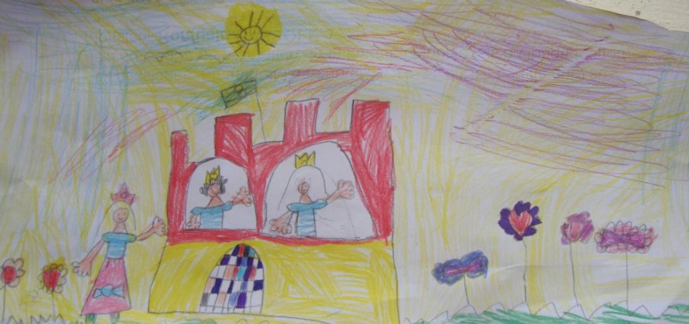

★
Mots Passants
Des mots de toutes les couleurs habitent ma maison,
Les mots vont et viennent,
Portés par le vent, ils se promènent,
Se baignent dans les nuages,
Se vivifient sous la pluie,
Se réchauffent au soleil.
Mots allants - Mots venants
Mots Passants
A
A califourchon
Les images me traversent et se dispersent
Telles les graines semées par le jardinier,
Que la pluie vient à disséminer.
Et dans un ailleurs inattendu,
Pour l’agrément de notre vue,
Des fleurs nouvelles s’épanouissent.
Petit roi au royaume des fleurs sauvages
Tout de pourpre vêtu, coquelicot tu me ravages.
Quand tu trônes au milieu de la prairie folle,
Je respire et respire pour ne pas, de toi, devenir folle.
Des odeurs chatouillent mes narines,
L’herbe fauchée attend badine,
Que des amoureux viennent se coucher
Et au milieu du pré se couvrir de baisers.
Une femme assise sur un banc,
Se repose et croque une pomme à belles dents.
En face d’elle, sur l’autre versant, un clochard s’affaire
Très en colère, contre la vie, il vocifère.
Une prière jaillit et monte au ciel :
« Marie, ma mère au firmament,
Je t’en supplie prends soin de mes enfants ».
Et dans l’azur m’apparaît immatérielle,
Marie ma mère du ciel.
Une amie m’ouvre la porte
De sa maison et de son cœur.
J’y entre, elle me transporte,
Telles les graines du jardinier,
Qui sous la pluie s’en vont ailleurs,
Éclore pour mon plus grand bonheur
À la piscine
« Pour être belle, il faut souffrir »
Voilà l’idée incongrue
Que sous la douche, une dame nue
Me lança sans départir.
Était-ce ironique ?
Se moquait-elle de mon gras ?
Sans discontinuer, elle ajouta
Pour avoir un ventre plat
Ni fraise Tagada, ni chocolat
Pour avoir une belle bouille
Croquez des carottes et du fenouil !
Et de rajouter
Au sport, adonnez-vous
La piscine fréquentez
Des longueurs surtout
Vous parcourez.
Si les résultats se font attendre
Faites de l’exercice à revendre.
Si ce n’est toujours pas suffisant
Le matin en vous levant
Des joggings au rythme cadencé
Finiront bien par vous sculpter.
« Pour être belle, il faut souffrir »
Je ne veux pas m’inscrire
Pour être belle, il faut sourire
Et pour sourire, il faut jouir.
Je croque dans une barre de chocolat Côte d’Or
Je lui fais un sort.
Adieu fesses sculptées et ventre plat
J’ai choisi pour tout apparat
D’avoir du gras !
Albertine
Au pensionnat, de Neuve-Église
Elle n’en fit rien qu'à sa guise
Jouer plutôt qu'étudier
Telle était sa devise
Pour marcher derrière le cul des vaches
Pas besoin d'être potache.
Cahier de conjugaison collé-fermé
Tables d'addition et de multiplication
Sous le paillasson.
Ni devoir ni leçon
Pour cette élève délurée.
En coiffeuse elle s'était vue
Ses parents n'ont pas voulu.
Pour une fille de fermier
Ce n'est pas un digne métier.
Un fermier, tu épouseras
Aux champs, tu travailleras.
À l'école, elle a bien fait
De profiter, de s'amuser.
À la ferme du Godhuis (gotus)
En jeune mariée, elle échut
C'est dans les prés de la Lys,
Qu'elle but sa coupe jusqu'à la lie.
Derrière le cul des vaches, elle marcha
Des bouses ramassa,
Du fumier charria.
Au champ elle travailla
Des patates planta,
Des betteraves arracha.
Mais la ferme du Godhuis,
N'était pas le terminus.
Le destin à sa manière
Lui joua un bon tour de sorcière,
La fermière se muta en épicière.
Pour vendre et marchander
Il fallait savoir compter
De dessous le paillasson
Tables d’addition et multiplication
Firent leur apparition.
Elle avait plus d'un tour dans son sac, la futée,
Rapidement, son commerce su faire marcher.
C’est en servant les clients,
Qu’elle gagna le pain de ses enfants.
Elle finit sa vie en s’amusant de ses chalands
Loin des vaches et loin des champs.
Altérité
J’ai cherché à croiser ton regard,
J’ai cherché à t’offrir un sourire.
Tu as eu peur de sourire,
Tu as regardé nulle part.
Tu ne m’as pas reconnue,
Tu ne t’es pas reconnu.
Tu es un autre moi,
Je suis un autre toi.
J’ai insisté,
J’ai insisté en vain.
Mon sourire s’est perdu,
Tu n’as pas su.
Par d’autres chemins,
Je m’en suis allée,
Vers d’autres moi-même,
Vers d’autres toi-même.
A la recherche d’un sourire osé.
Alternative
Boule au ventre,
Mâchoire qui tremble.
Respiration paralysée,
Pensées annihilées.
Subir, agir
Agir, subir.
Se gaver d'anxiolytiques,
Devenir alcoolique.
Déchoir, décevoir.
Passer du bleu au noir.
Choisir un mode alternatif.
Accueillir l'émotion,
Vivre la sensation.
Un chemin entrouvert,
Passer du bleu au vert.
Cette histoire me fut contée,
Il m’est plaisant de vous la rapporter.
Une jeune fille curieuse posa sans détour
Cette question à un couple sur le retour.
Que reste-t-il à septante ans
De l’amour de vos vingt ans ?
La vieille dame amusée
Par la question posée,
Répondit avec spontanéité.
Comme vous belle tigresse
Nous avons connu la fougue de la jeunesse.
Non, nous n’avons pas toujours joué à la crapette
Mille endroits insolites ont accueilli nos galipettes.
Retenez cependant jeune enflammée,
Que pour l’amour perdurer,
Dans notre musette
Il a fallu autre chose que les galipettes.
Nos corps rassasiés,
Nos âmes ont quémandé.
Pour abreuver corps et âme
Il nous fallut d’autres armes.
Dialogue, liberté
Entraide, respect
Sont, les galipettes, venus compléter.
Et pour répondre à votre question jeune indiscrète,
Au fond de notre musette,
Et du haut de nos septante années
Nous avons une bonne et solide amitié à partager.
Au coin du feu
Chaleur bonheur,
Beauté du cœur.
Feu en flamme,
Embrase mon âme.
Foyer partagé,
Joie éprouvée.
Braises brûlantes,
Mille fois aimantes.
Cendres gisent,
Chagrins s'enlisent.
Poêle vidé,
Tout à recommencer.
Bois, papier,
Allumettes craquées.
Chaleur bonheur,
Amour au cœur.
C
Cadeau
Pour ton anniversaire
Voici quelques petits vers
Pour te clamer
Combien tu es aimé.
En te disant simplement
Par beau ou mauvais temps,
Sous la pluie, sous le soleil,
Sous la neige ou sous le vent,
Chaque matin au réveil.
Que la vie est belle !
Que le monde est beau !
Que vivent les merveilles !
La vie à tes côtés
A un goût de miel.
Cauchemar
Mon cœur s'étreint,
Ma tête s'embrume,
Je nage en vain
Je fuis sa plume.
Une femme corbeau,
Me tire de l'eau.
Me jette au sol,
Prend son envol.
Une forme sans âge,
Sur le rivage,
Avance vers moi,
Et me foudroie.
J’hurle de peur,
Bondis de frayeur.
Je me réveille,
Il fait soleil.
Chimère
Je t’ai dans la tête et je te guette,
Un coup par la fenêtre d’en haut,
Un coup par la fenêtre d’en bas.
Viendra, viendra pas ?
Hier, je t’ai préparé une mousse au chocolat,
Que j’ai dégusté sans toi.
Aujourd’hui, j’ai pétri un pain avec des noix,
Que certainement encore tu ne mangeras pas.
Demain, je t’achèterai des fruits de premier choix.
Une voiture passe, je crois te reconnaître,
Je cours vite à la fenêtre, je cours vite devant ma glace,
Je me coiffe et me recoiffe.
Je me suis trompée, ce n’était pas toi.
J’essaye de m’occuper, j’essaye de t’oublier,
Mais c’est plus fort que moi.
Tu es dans ma tête et je te guette,
Un coup par la fenêtre d’en haut,
Un coup par la fenêtre d’en bas.
Je décide d’aller me promener,
Peut-être vais-je te croiser.
Je flâne devant ton estaminet préféré,
J’entre dans cette librairie dont tu m’as parlé,
Je n’ose, de ton club, m’approcher,
Je crains d’être repérée.
Je rentre chez moi, serais-tu passé ?
Tu es dans ma tête et je te guette,
Un coup par la fenêtre d’en haut
Un coup par la fenêtre d’en bas.
Quels sont ces pas que j’entends là ?
Serait-ce enfin toi ?
Je mange seule mon pain aux noix.
Demain, je te préparerai une salade de fruits,
Que je parfumerai au Grand-Marnier
Ou à la fleur d’oranger.
Je t’ai dans la tête…
A cinq ans te tenant bien
Entre mes deux mains,
Je suis partie sur le chemin
Pas si loin, juste au coin
C’était déjà bien loin.
Quel bouleversement
Dans ma vie d’enfant !
Plus vite qu’à pied, je pouvais aller.
Que de sensations éprouvées
Chaque fois que je t’ai enfourché.
Mon petit vélo rouge verni,
Quand j’ai grandi,
Chez ma cousine, tu es parti.
Alors, un nouvel ami,
Est venu partager ma vie.
A deux mains ou sans main,
En pédalant grand train,
Quand mes cheveux au vent flottaient,
Tous mes soucis s’envolaient
Et avec toi je m’aventurais
Loin de mon quotidien défait.
Ecole buissonnière, escapade cavalière,
Sortie pouponnière,
Précieux sentiments de témérité,
A chaque échappée
Tes deux roues m’ont donnés.
Si pendant quelques années
Mon vélo vert doré,
Au fond du cellier,
Je t’ai laissé
Et fait quelques infidélités,
C’était pour mieux te retrouver.
Liberté, félicité, complicité,
Plaisir partagé,
Tout est toujours satisfait
Quand mon vieux compagnon,
Je tiens ton guidon.
Vélo présent de mes parents,
Vélo recueilli de la fratrie,
Vélo payé de mes deniers,
Vélo choisi par mon mari,
Vous fûtes tout à la fois
Pluriels et singuliers.
Consolation
Discret comme un croissant de lune
Perdu dans un ciel nuageux,
Il viendra doucement gratter à l’huis,
Espérant par cette nuit sans clair de lune
Découvrir de la chaleur et du moelleux
Et contre toi se blottir dans ton lit.
Lorsque tu lui ouvriras ta couche,
Que près de toi, il allongera son âme meurtrie,
Tu surprendras ce petit bruit
Que fait ton chat pour dire merci,
Quand par les jours de grand froid ou de pluie,
Sur tes genoux, de bonne grâce, tu l’as accueilli.
Alors, suavement tu lui effleureras la bouche.
Au petit matin, en guise de bon jour,
Au travers les persiennes entrebâillées,
Ce sont les rayons du soleil rieur
Qui viendront chatouiller vos cœurs entrelacés.
Dans un halo de bien-être et de chaleur
Vous vous découvrirez les corps et les cœurs charmés,
Par cette nuit gratifiée de tendresse et d’amour.
D
Destination
Sous mes roues la route se déroule.
Tel un film, le paysage défile,
Je file.
Je vois sans voir,
J’avance impassible.
Je sais d’où je viens
Je sais où je vais.
Sans se lasser la radio débite
Son incessant babil
Qui comble l’absence de ma présence
J’entends sans entendre.
J’avance inaccessible.
Je sais d’où je viens
Je sais où je vais.
Des oiseaux traversent un ciel bleu constellé de nues.
Un soupçon de printemps agite l’atmosphère,
Canaux fermés, émotions anesthésiées.
Je sens sans ressentir.
J’avance absorbée.
Je sais d’où je viens
Je sais où je vais.
Autos tamponnantes, lumières bruyantes,
Réveil cinglant, réveil sanglant,
Horreur, malheur, souffrance,
Je vois, j’entends, je sens.
Je sais d’où je viens
Je ne sais où je vais.
Aller - retour
Partir - revenir
Aller - sans retour
Partir - sans revenir
Ne plus réfléchir.
Divagations
Gris maussade, du vague à l’âme,
Temps qui passe, cœur qui rame.
Je clique, je clique,
Etends du linge,
Pensées diffuses, pensées confuses.
Du lac d’Annecy au lac Léman
J’attends mon amant.
Je clique, je clique,
Le ciel s’éclaire, je prends mon air
Et l’air de rien, enfile mon imper.
Ne pas être entière
Ni noir ni blanc, ni tout ni rien,
Tout pour le gris, sans coloris.
A ce jeu-là
Il n’y a plus d’émoi, ni moi.
Retour sur soi.
Je clique, je clique,
Nouveau décor,
La pluie ruisselle,
Je déploie mes ailes.
L’as-tu trouvé,
Le temps d’aimer ?
Es-tu toujours hantée ?
Je l’ai trouvé, je peux le jurer.
Je clique, je clique,
Automne, Automne,
En moi tu résonnes.
L’humeur fantasque de ton ami Eole,
Ce grand rouquin
Te jette au sol, te déshabille,
Ne fais-tu rien ?
Je clique, je clique,
Cumulet avant, cumulet arrière,
Je tourne ma petite cuillère.
Sur les quais de Saône,
Le soleil câline.
A la table voisine,
Un couple libertine,
Jean les roule dans la farine.
Quelle drôle d’usine !
Je clique, je clique,
Cherche une suite,
Prends le balai d’sorcière,
Lui cours derrière,
Lui jette un sort.
Elle s’évapore.
Je clique, je clique,
Du coq à l’âne,
Au saut de mouton
Sur la mer grise
Mon vague à l’âme
Sans mal divague.
Je clique, je clique…
E
En attendant août
A la douce saison du forsythia,
Je te tourne et te retourne.
Je te respire et m’enivre,
Ta divine fragrance me transcende.
Je te prends dans le creux de ma main,
Te palpe pour mieux ressentir ton grain,
T’effrite pour te connaître bien.
Durant des heures, bêche en main
Tu me brises les poignets et les reins,
Mais ça ne fait rien, car je t’aime
Et je sais que tu me le rends de même.
Pour cette journée, assez travaillé,
Je nous laisse nous reposer,
Je nous laisse nous coucher
Jusqu’à la saison du lilas.
Je viendrai alors t’ensemencer,
Pour que le creux de tes entrailles
Accueille les plants que j’y déposerai.
Comme une mère, je veillerai sur toi,
Sur ton sommeil et ton soleil.
Chaque jour je t’abreuverai, je te choirai
Autant que tu l’exigeras.
Ceux qui passeront devant toi,
Connaîtront le pays d’où je viens.
On saura qu’au jardin de ma mère
La reine se nomme pomme de terre.
Et je sais que ton ventre en sera plein.
Pour récolter les fruits de nos ébats,
J’attendrai patiemment qu’août soit là.
Alors, les mains sages de mes petits-enfants,
Viendront gaiement vider ton ventre opulent.
Enfance

Quand je te regarde,
Je m’aime.
J’aime tes cheveux courts, tourmentés
Sur ton oreille décollée.
J’aime tes yeux irréguliers,
Ton regard satiné.
J’aime ton sourire offert
Qui dévoile une jolie rangée
De dents de lait.
J’aime tes petites mains croisées,
Sur tes genoux, sagement posées.
J’aime ton tablier fripé
Et bien boutonné,
Qui cache je le sais
Un trou dans ton maillot rayé.
J’aime la petite fille sereine
Que reflète ton image olympienne.
Quand je te regarde,
Mon âme se calme.
Une immense joie
M’envoie près de toi.
Un frisson de bonheur
Parcourt mon cœur.
Quand je me regardais,
Je t’aimais si fort
Je t’aime encore.
Espérance

Tristesse et désespoir
Quand vous étreignez mon cœur
Dans la nuit noire
Je serre ma douleur
Si fort qu’elle prend peur.
Je prie l’allégresse
D’envoyer promener ma tristesse,
Que la passion qui m’habite
Jamais ne me quitte.
J’allume une bougie
Qu’une lumière éclaire ma vie,
Qu’à mon réveil
Je retrouve mon soleil.
Evasion
Ce n’est pas le violon,
Ce n’est pas le champ de blé,
C’est juste une soirée coincée
Sur un mauvais tabouret
Avec un aiguillon dans le talon.
Ecouter, parler, donner un avis
Avoir l’air impliqué,
Sans jamais trop se mouiller.
Se mettre en mode survie.
Laisser son esprit s’évader.
Déambuler,
Quelque part entre ici
Et la Scandinavie.
Rêver au soleil de minuit.
Minuit, heure fatidique,
Revenir sur terre, ne pas bouger,
De peur de s’enfoncer l’épine dans le pied.
Discrètement, regarder l’heure,
Un peu de baume au cœur,
Ce soir, ce ne sera pas mon heure.
La séance touche à sa fin,
Mettre entre parenthèses
L’épée de Damoclès,
Et filer à l’anglaise.
Sortir mon harmonica,
Trinquer à la vodka.
Le pied délivré,
Effectuer quelques pas chassés.
Jusqu’au petit matin,
Courir libre par les chemins.
F
Fable de la bergerie
Le loup est entré dans la bergerie,
C'est l'agneau qui l'y a conduit.
Avec sympathie,
La famille
L'a accueilli.
Goupil, le subtil
Lui avait dit :
"Tu dois devenir son ami,
Fais-toi gentil,
Soit bien poli,
Doux comme une brebis".
Sans arrière-pensée,
Repas et jeux, l'agneau spontané
Avec le loup a partagés,
Et même le coucher.
Pendant la nuit, la bête féroce
Pensait être de la noce
De l’agneau se restaurer,
Sans être inquiété.
Plus finaud qu’il n’y parait,
Papa bélier était aux aguets,
Sur le loup, s'est rué,
De ses cornes a usé,
Hors de la bergerie l'a jeté.
L'agneau affligé a pleuré,
Papa bélier a sermonné,
"Aux apparences, il ne faut pas se fier".
H
Humeurs
Un caillou qui n’a rien d’un bijou,
Dans mon soulier s’est glissé,
Sur le chemin, j’ai claudiqué.
Une chanson d’Arno passe à la radio,
Les mains dans l’évier,
Je nage à ses côtés.
J’écoute la sonnette carillonner,
Sublime surprise, un thé partagé,
Je suis la félicité.
Une langue fourchue a sévi,
Ma chair par cette vilénie et
Mon cœur par cette piteuse sont meurtris.
Un toboggan, dans une plaine de jeux,
Des enfants, des étoiles dans les yeux,
Je glisse avec eux.
Une blanche inonde mon palais,
Exauce mes souhaits,
Je bois du petit lait.
Deux revolvers qui n’ont rien du jouet,
Froidement, dans les yeux m’ont toisé,
Du pain noir, j’ai mangé.
Elle joue, je crains,
Un yo-yo à la main,
Un va-et-vient souverain.
I
Idylle
Si je te proposais de venir te promener avec moi,
Nous irions par les chemins de la forêt Dorée.
Je te guiderais sur les allées ombragées.
Nos pieds fouleraient les feuilles mortes,
Nos mains se frôleraient, nous serions en émoi.
Nous nous raconterions n’importe quoi
Juste pour le plaisir d’entendre nos voix.
Je te dirais mes rêves inventés
Tu me confierais tes pensées habitées
Je t’écouterais plaisamment.
J’accorderais mon pas sur ton pas,
Et respirerais tout bas.
Nous avancerions ainsi, jusqu’à l’orée du bois,
Troublés, l’un et l’autre d’être seuls, là.
Si je te proposais de venir te promener avec moi,
Peut-être vivrions-nous cette idylle que j’entrevois ?
Inégal combat
Elle avance en sourdine,
D’un seul coup assassine.
Vous jette sur le canapé
Comme une mouche vous tombez.
Tremblements et chair de poule
Des frissons qui roulent
C’est la fièvre qui s’abat
Qui livre son combat
Contre l’influenza.
A chacun sa tactique
Gorge enflammée
Membres courbaturés
Céphalées.
Vous sortez pour toutes répliques,
Acide ascorbique,
Acide acétylsalicylique
Antalgique.
Pour l’éliminer,
Vous la jouez serrée.
Sur le canapé
Vous dormez.
Ça y est
Vous avez gagné !
Prise en traître
Elle plie en retraite
Toujours en sourdine,
À la recherche
D’une nouvelle victime.
J
Jeunes mères
Mes filles m’ont demandé
D’une jeune mère
Peux-tu parler ?
Jeune mère, j’ai été
Aujourd’hui, j’ai tout oublié,
Plus de jeune mère, plus de passé.
Alors pour vous en parler
Mes filles, je vais vous regarder.
Les ailes coupées par votre bébé,
C’est de la douceur du mouton
Dont jouit votre poupon.
Quand dans vos bras vous le tenez
Et que vous lui offrez
Sans compter votre téton,
Qu’il pique un roupillon,
Vous voilà prises d’une belle émotion,
En voyant votre petit glouton
De sa confiance vous faire don.
Soupe au tapioca, soupe aux myrtilles,
Crème au chocolat, crème à la vanille,
Salades de fruits gentils,
Vous leur mitonnez toutes sortes de douceurs,
Et leurs ventres repus,
Vous disent dans un rot de bonheur,
« Je n’en peux plus ».
En partageant les tartines
Sur la table de la cuisine,
Chacun y va de sa comptine,
Parle plus fort que son voisin et sa voisine.
Distribution de tendresse à tour de bras
Bisous par-ci, caresses par-là,
Chaque enfant y a droit.
Chagrins, câlins,
Nuits blanches, souffrances.
Devoir, leçon,
Chanson, déclamation.
Jeux partagés, plaisirs distribués
Joies récoltées.
Toutes vos journées foisonnent
De ces petites choses
De ces modestes choses,
De toutes ces choses dont on ne parle pas assez
Et pour lesquelles vous excellez.
Merci mes filles, d’avoir demandé
Si d’une jeune mère je peux parler.
A vous regarder,
En moi tout s’est réveillé.
Je me suis soudain rappelé
Tous ces bons moments passés.
Des bébés, j’ai bercés,
Des larmes mes doigts ont essuyées
Ma poitrine, des enfants a consolés,
Des bras cajoleurs m’ont enlacée,
Des petites mains potelées
Dans les miennes se sont glissées.
L
L'oie
Je suis seule au bord de la mare
À garder la maison abandonnée.
J’ai beau criailler, j’ai beau hurler,
Plus personne à voir venir,
Plus personne à prévenir,
Ils sont tous partis.
C’est mon compagnon, le jars, le premier qui s’en est allé,
Ils l’ont enlevé, trop agressif, pour ici demeurer.
Je suis restée dans la basse-cour avec pour toute assistance,
Ce coq suffisant et ces poules caquetantes.
Aujourd’hui, poules et coq aussi m’ont quittée,
Et ils me manquent.
J’ai ri sous cape quand ils les ont emportés,
Je n’ai cacardé seulement quand près de moi,
Ils se sont approchés.
Aujourd’hui, seule au bord de la mare,
Scrutant l’horizon lointain
J’invoque mes souvenances.
Plus de jars pour m’honorer
Plus de graines à picorer
Plus de coq pour me réveiller
Plus de poules à moquer
Plus de bâton pour m’éloigner
Plus d’enfants à paniquer.
Aujourd’hui, seule au bord de la mare,
A garder la maison abandonnée,
A fouiller pour manger,
Je prie Dieu qu’il vienne me chercher.
La bénévole du mercredi
Perdue dans son grand manteau
Lèvres colorées,
Yeux soulignés,
Pétillante, rayonnante,
Chaque mercredi à quatorze heures tapantes,
Elle arrive souriante.
Sa sacoche au poignet
Grosse de trésors à distribuer
À tous les immigrés,
Embrassades, rigolades, mains serrées,
Tout est à donner.
Elle offre sans relâche
Un café, un potage, une ganache,
Une oreille écoutante,
Une phrase réconfortante.
Et quand, le soir, ils repartent réchauffés
Le cœur plus léger,
Riches de l’amitié qu’elle a donnée,
Elle quitte, de son pas vif et décidé,
Sa sacoche débordante
D’émotions partagées,
La salle désormais vidée.
La jalouse
Poésie méchante ?
Poésie navrante.
C’est de la jalouse
La parlante
Qu’elle fera marcher
Sa langue
Elle regarde, elle observe, elle guette
« Comment fait-elle ?
Ouf ! Je fais mieux qu’elle ».
Elle pèse, elle mesure, elle compare
« Combien en a-t-elle ?
Ouf ! J’en ai plus qu’elle ».
Elle examine, elle scrute, elle inspecte
« Comment est-elle ?
Ouf ! Je suis mieux qu’elle ».
Elle chuchote, elle complote, elle mijote
Elle prépare la bagarre
L’assaut final
Qui pourtant ne la mènera nulle part.
La ménagère
Sa mère lui a appris,
Que son ménage il faut tenir.
La maison, astiqueras
Le linge, repasseras
Le jardin, cultiveras
Les vêtements, ravauderas
Les papiers, classeras
Pour son mari, il faudra
Cuisiner avec du bon gras
Des casseroles de pommes de terre
Du bouilli à la fermière
Du porridge à sa manière.
Quand la famille s’agrandira
Que les enfants seront là,
Crème à la vanille,
Pudding de pain rassis,
Mille et un biscuits
Viendront ravir le palais de ses petits.
Tout cela, la ménagère, de sa mère,
Elle l’a appris.
Mais quand la femme a jailli,
Plus de coup de serpillère,
La maison pleine de poussière.
Plus de linge dans la panière,
Les habits qui traînent par terre.
Plus de classeur sur l’étagère,
Le désordre dans les affaires.
Plus de soupe dans la soupière,
L’économe au cimetière.
Plus de crème dans la cuillère
Les bonbons de l’épicière.
Le micro-onde pour gazinière
De nouveaux savoir-faire aux ménagères
De nouvelles femmes mises en lumière.
La rivale
Tu es entrée dans ma vie
Sur tes pattes de velours,
Dans mon fauteuil tu t’es lovée
Et tes poils j’ai ramassés,
A ma table tu as miaulé
Et mon repas, j’ai partagé,
Quand sur ma couche
Tu as jeté ton œil louche,
Là, j’ai compris
Cette fois-ci
Que ma volonté moribonde
Aurait encore raison de ta faconde.
Mais je ne tiendrai pas rigueur
A celle qui a pris
L’homme cher à mon cœur.
A ton insu, ma complice
Tu es devenue.
De toi je me suis servie
Pour mieux comprendre
L’homme de ma vie.
Le bouquet de la mariée
Gentil coquelicot
C’est dans les champs de blé
Que tu es né.
Je te cueille et te serre
Sur mon cœur
Avec la fleur de beurre
Ta petite sœur
Qui s’en va compter fleurette
A la jolie petite pâquerette.
Il ne manque à mon bouquet
Que monsieur le bleuet
Qui pointe son nez
Chaque année au mois de mai.
Je le prends et l’ajoute à ma cueillette.
Lui aussi sera de la fête,
La mariée a composé
Sa joyeuse aigrette.
Le pendu...le
Tic-tac, tactique
Tic-tac, tactique
Gauche-Droite
Droite, Gauche
Gauche, Centre
Centre, Centre, Cen,
S’arrête le balancier.
L’as-tu vu le pendu ?
Oui, non, je n’sais plus.
Le pendu est revenu.
Comme le crucifié, je l’ai croisé
Car au ciel, il n’est pas monté.
Le pendu, il est descendu
Six pieds sous terre, en enfer.
Le diable n’en a pas voulu.
Aujourd’hui, entre ciel et enfer
Il traîne sa misère avec quelques compères.
Jamais, il ne sera rendu, le pendu,
S’il avait su…
Le pré d'à côté
J’en ai plein le dos
Des jambes molles,
Des crampes au ventre,
Des doigts qui tremblent.
Je bois un verre
T’envoie promener
Et vide mon sac.
Tu peux rester
Dans le pré d’à côté,
Paraît que l’herbe y est plus verte
Je t’la laisse manger.
N’oublie pas d’y amener
Ta méchanceté musclée
Tes mots acérés
Tes colères explosées
Tes mensonges répétés
Tes coups montés
Tes manies exagérées
Ta duplicité
Ton caractère stressé
Tes idées arrêtées
Ton coffre et sa clé
Ton compte privé
Ton téléphone piégé
Ta famille raffinée
Ton bijou caché
Tes chiques et tes slips renouvelés.
Je rebois un verre,
T’envoie promener,
Reprends mon sac
Et y remets
Ma chère gaieté
Ma liberté retrouvée
Ma sécurité assurée
Mes nuits dans les bras d’Morphée
Mes sourires confisqués
Mon appétit oublié
Mes bonbons préférés
Ma musique à écouter
Mon métier à exercer
Mes amis à gratifier
Mon amour à partager
Ton départ à fêter.
Chez moi je sais ce que j’ai,
Une maison à faire tourner
De beaux enfants à faire pousser
Je vais m’y appliquer,
Tu appartiens désormais au passé.
Mes idées renouvelées
Ca y est, j’vais plus pleurer
J’suis loin du pré d’à côté.
Les deux sœurs
J’étais sa canne,
Elle était ma béquille.
Dans le grenier nous partagions
Nos jeux dans le même lit.
Bonnet d’âne et origami
Parfois jeu de billes.
Les nuits de mauvais sommeil
Nous descendions boire une verveine.
Nous nous racontions nos joies nos peines
Apaisées, nous retournions dans notre domaine.
Pour nous réchauffer l’une derrière l’autre
Bien serrées, nous nous tenions,
En petit train jusqu’au matin.
On m’a toujours dit,
Ne sois pas impolie,
Dire des gros mots
Ce n’est pas beau.
Même dans la cour de récré,
Ils n’étaient pas autorisés,
Si quelqu’un s’y essayait,
Derrière Brel ou Brassens, il se cachait.
Aujourd’hui, quel charivari,
Tout le monde en dit.
Manuel ou intello,
De l’instit à la prof de philo,
A la télé, à la radio,
Paraît que ça fait bobo.
Quel que soit le ton
Utilisé par ces moutons,
À l’oral comme à l’écrit,
Fait chier, merde, putain
C’est pourtant toujours vilain.
Cette fois, j’ai bravé l’interdit,
Une petite voix dans mon cerveau,
Me murmure tout bas,
T’es descendue bien bas,
Te voilà toi aussi convertie.
Que sonne l’hallali !
Les mouches
Dans la maison désormais vidée,
Des mouches volent silencieusement.
Sur les murs autrefois blancs,
Elles s'arrêtent et déposent leurs excréments.
Quand les mouches, piégées dans les toiles d'araignées
S'arrêtent de voler,
La maison se meurt inexorablement.
Un homme arrive sur le seuil,
L'œil terne, le cœur froid.
Taciturne, il observe la place.
Soudain dans ses oreilles, des rires jaillissent,
Une joyeuse farandole menée par une femme
et ses enfants l'entoure.
Elle chante, elle danse, elle rit.
L'homme ferme les yeux, se bouche les oreilles,
Les rires et les chants résonnent dans sa tête.
Il voudrait ne plus voir, ne plus entendre,
Partir, courir, fuir,
Mais il ne peut bouger
Il reste là, figé, jambes coupées face au cimetière de sa vie.
Il tombe, ne peut se relever, ni s'empêcher de déféquer.
Comme les mouches, il est piégé, prisonnier de sa toile d'araignée.
Les trottoirs de Lausanne
Sur les trottoirs de Lausanne,
J’ai croisé
Un ivrogne
Je l’ai reconnu à sa trogne
Un dealer
Il filait de la came à un inspecteur
Une fille de joie
Elle était triste crois-moi
Un zombi
Il portait un drôle d’habit
Une main tendue
Elle n’avait rien reçu
Un condom
Oublié par son homme
Un clochard
Garni d’un sacré cocard
Un jeune militant
Il avait la rage aux dents
Une cycliste
Pas sage hors la piste
Un joggeur
Il vidait les horodateurs
Une expatriée
Elle n’avait personne à qui parler
Un policier
Caché derrière un pilier
Une bonne sœur
Avec sa croix sur le cœur
Une fille voilée
De la tête aux pieds
Un vieux curé
À l’humeur mal tournée
Un demandeur d’emploi
Il n’avait plus la foi
Un immigré
Il cherchait un lit pour la soirée
Un regard noir
Il avait perdu l’espoir
Un gros monsieur
Il n’avait pas froid aux yeux
Enfin, j’ai croisé une demoiselle
Vêtue de dentelle.
Elle jouait à la marelle
Les poches pleines d’oseille.
Oh, que la vie est belle !
M
Madame Sangsue
Madame Sangsue est venue
Elle est revenue.
Pour des tasses et des assiettes
Des couvertures et des carpettes
Elle s’est mise dans les dettes
Jusqu’au-dessus de sa tête.
Madame Sangsue est venue
Elle est revenue.
Elle cherche une administration
Qui pourrait lui filer du pognon.
En matière d’affabulation,
Elle s’y connait béton.
Madame Sangsue est venue
Elle est revenue.
Les créanciers sont à ses trousses,
Les huissiers la détroussent.
Elle ne leur donnera pas son flousse,
Elle a encore quelques ressources.
Madame Sangsue est venue
Elle est revenue.
Pour échapper aux poursuites
Inutile de prendre la fuite
Elle fait confiance
A la Banque de France.
Madame Sangsue n’est plus revenue
Son dossier a été reçu.
Adieu créanciers et dettes,
Elle garde ses tasses et ses assiettes,
Ses couvertures et ses carpettes,
Et s’en va faire quelques emplettes…
Mon cheval des mers
Quand c’est toi qui souffres
C’est moi qui écope.
Pour ne pas tomber dans le gouffre,
Eviter les psychotropes.
Pour te booster,
Te donner du tonus,
Je vais marcher
Au lieu de prendre le bus.
Pour ne pas te stresser,
Voir le beau côté,
Je vais m’empresser
De t’oublier…
Mon père
Mon père le matin
Se mettait vite entrain.
Sitôt levé,
Sur son long caleçon
Il enfilait un pantalon,
Endossait une grosse chemise de coton
Chaussait une paire de solides bottillons.
Ni salle d’eau, ni lavabo,
Pour rafraîchir sa bobine
Un mince filet d’eau
À l’évier de la cuisine.
Pour son premier repas
Une jatte de lait chaud au chocolat,
Deux œufs sur le plat,
Du pain autant qu’il en mangera.
L’air vif du matin
Finissait de le mettre entrain.
Et c’est au rythme de sa jument
Qu’il s’en allait vivement
Labourer son champ.
Mot à Mot
Les bons, les mauvais mots
Mots amis, mots ennemis
Mots d’esprit n’ont pas de prix
Mots bonjour dits chaque jour
Mots d’amour rarement pour toujours
Mots d’enfants parfois méchants
Mots mangés non assumés
Mots volés pour le plaisir d’oser
Mots d’humour, malheureusement vautour
Mots d’oiseaux, attention mots chameaux
Mots défendus alors cocus
Mots Julos, mon cosmos
Mots chardons donnent le bourdon
Mots pour rire, ceux qu’on désire
Mots agresseurs douleur pour le cœur
Mots slogans, mots toboggans, ne durent qu’un temps
Mots voyous, souvent tabous, à mettre sous verrous
Mots assassins, mots crétins, ne font pas long chemin
Mots mondains, baratin qui ne sert à rien
Mots taquins, mots malins chers aux diablotins
Mots cochons, passe le torchon
Mots d’amants sont chenapans, méfie-t’en
Mots lilas, délicats comme le taffetas
Mots gais aujourd’hui galvaudés
Mots épais chers à Linda Lemay
Mots tyrans, de forbans, jamais charmants
Mots maman, précieux talismans
Mots sages, tu les encourages
Mots pour toi, mots pour moi,
Mots pour nous, mots tout doux.
Mots Passants
Des mots de toutes les couleurs habitent ma maison,
Les mots vont et viennent,
Portés par le vent, ils se promènent,
Se baignent dans les nuages,
Se vivifient sous la pluie,
Se réchauffent au soleil.
Mots allants - Mots venants
Mots Passants
N
Nespresso
Cette année pour la fête des pères,
Nous avons pensé à ta cafetière.
Pour des week-ends motivés,
Voici de quoi préparer
Un café bien dosé.
Avec Nespresso
Plus besoin d’aller au bistrot,
Mieux qu’au bureau,
Bien au chaud,
Le petit noir en peignoir.
A partager sans restriction
Comme toute notre affection.
P
Paradis
Une goutte d’eau
Tombe sur le front,
Roule sur le nez,
Échoue sur les lèvres plissées,
D’une vieille enchantée.
Goutte d’eau de pluie,
Goutte d’eau de vie,
La vieille ragaillardie,
Regarde le ciel soudainement gris,
Et poursuit d’un pas de cabri,
Sa promenade sous la pluie.
Mille gouttes d’eau
Tombent sur son front,
Roulent sur son nez,
Inondent ses lèvres plissées,
La voilà trempée
De la tête au pied.
Goutte d’eau,
Trombe d’eau,
La vieille guillerette
Est de la fête.
Sa promenade sous la pluie
L’a conduite au paradis.
Parfum de cannelle
Une femme assise sur un banc flandrien,
Tient dans sa main un petit biscuit brun.
Il fleure bon le caramel et la cannelle,
Comme une feuille de chêne, il est bordé de dentelle.
Assise sur son banc, au pays de ses racines,
La femme a le visage couleur chagrine.
Son existence est bouleversée, Koch et ses bacilles ont envahi
Les poumons de son cher logis.
Mille et une douleurs tourmentent son corps meurtri,
Par des pensées malignes, son esprit est envahi.
Une tempête dévaste sa tête,
Elle se figure telle l’alouette.
Peu à peu, la fragrance du biscuit monte à ses narines,
La gourmande en oublie ce qui la ravine.
Elle respire les parfums de caramel et de cannelle,
Qui l’emmènent loin de son fiel.
Friande, elle croque le spéculoos,
Le soleil est dans sa vie, elle voit rose.
Disparaissent ses soucis,
Monsieur Koch et ses bacilles.
Enfouies les névroses
Et toutes tuberculoses.
Café du matin
Pour tremper le pain
Café bien tassé
Pour gens fatigués
Café en gobelet plastique
Ejecté de la machine automatique
Café de midi
Pour éviter le tapis
Café américain
L’air de rien
Fait du bien
Café d’autoroute
Pour une pause courte
Café liégeois
Se consomme froid
Café à la chicorée
Pour économiser
Café jus de chaussette
Jour de disette
Café rallongé
Quand on n’a pas de nez
Café en excès
Sommeil agité
Petit noir au comptoir
Compagnon du désespoir
Café Nespresso
Café presto.
Petits bleus

Barnabé, le bien nommé
Tu as pointé ton joli nez
Et ton sourire enjoué
Par une journée ensoleillée.
Petit santon,
Tes yeux bleus caméléons
Qui passe de l’acier au coton
Font de toi un sacré fripon.
Pierre, c’est au Luxembourg
Où tes parents firent un détour
Que sans bruit et sans tambour,
Tu as vu le jour.
Tes grands yeux bleus écarquillés
Ont regardé ce monde, étonnés.
Et du coin de la bouche
Un sourire tout minouche
A ta famille extasiée
Tu as esquissé.
Pour vous, les deux petits bleus,
Votre maman Juliette se fait follette,
Votre papa Nicolas fond comme du chocolat.
Poète en herbe
Quelqu’un m’a dit,
Si tu veux devenir poète
Tu dois trouver des vers,
Les écrire en rythme
Croiser les pieds
Et parler en alexandrins.
Trouver des vers
Ce n’est pas extraordinaire
Je m’en vais remuer la terre.
Ecrire en rythme, il n’y a pas de hic !
Ça aussi c’est dans ma pratique.
Il suffit d’une bonne musique.
Croiser les pieds,
Ce n’est pas sorcier.
Mais pour parler en alexandrins
Il me faudrait l’aide de Merlin.
Seuls quelques mots en flamand
Me viennent aisément.
Et pour toute composition,
Je vous livre sans façon,
Ces vers qui ne sont pas de mon invention.
« Ça rime et ça rame
Comme tartine et boterham.
Je fais des vers
Sans en avoir l’air
C’est trop fort,
J’en fais encore ».
Prière
Bon et bête commencent par la même lettre.
Dieux du ciel et de l’enfer, entendez ma prière,
Donnez-moi le courage de passer la serpillère,
Que bon et bête, je devienne, aidez-moi à m’y mettre.
Bonté du ciel, bonté divine,
Que ce souhait soit ma doctrine !
R
Requérant d'asile
Je ne suis rien
Si rien, si rien.
Au fond d’un trou à rat
On me fait vivre ma foi.
J’ai rêvé d’un Occident
Aux doux accents chantants.
J’ai rêvé d’une vie plus belle
Comme la vive hirondelle.
J’ai rêvé de liberté
On me l’a fait cher payer.
J’ai rêvé de bons papiers
On me les a refusés.
J’ai rêvé de travailler
On ne m’a pas autorisé.
J’ai rêvé d’éternité
Ça, on me l’a proposé.
Il suffit de retourner
Au pays que tu as quitté
Et les geôliers
Sauront te faire passer
De l’autre côté
Pour l’éternité.
Plus besoin de te rappeler
Que tu n’es rien
Plus rien, plus rien…
Rêves câlins
De petites ordures sont déposées dans la rue
A destination des paumés sans blé.
Deux fauteuils à bascule me font de l’œil
Je les convoite depuis mon seuil.
Vais-je faire le pas ?
Prendre ma charrette à bras
Et sans embarras les ramener chez moi.
Mon fils me rudoie :
« Ces petites ordures déposées dans la rue
A destination des paumés sans blé,
Ne sont pas pour toi ».
Ouh là là et moi qui me voyais déjà
Côte à côte avec mon vieux
Nous balancer à qui mieux mieux
Comme sur un hue dada.
Fini de rêver, pour oublier,
Je m’en vais me promener.
Tout au long du chemin,
J’essaye de faire passer
Mon désir câlin.
Et dans ma tête, en lettres majuscules
Je m’empresse d’imprimer :
« Plus de rêves à bascule,
Ces petites ordures sont déposées dans la rue
A destination des paumés sans blé.
Tu ne peux les lorgner ».
En rentrant chez moi,
Qui donc est là ?
Mon vieux avec la charrette à bras,
Qui transporte sans embarras,
Les deux fauteuils Ikea.
Ouh là là, il a eu la même idée que moi.
Quelle joie, cette fois !
Rue Saborde
En descendant la rue Saborde,
Chaque soir, tu en croises,
Des cohortes confondues dans le noir.
Ils ne sont pas venus pour dealer
Ils espéraient juste travailler,
Devenir maçon, cuisinier,
Et construire un foyer.
Aujourd’hui, s’ils veulent manger,
Ils doivent accepter
De voir leurs rêves partir en fumée.
Ils nous fournissent,
Nous enfants gâtés,
Qui n’avons jamais espéré
Qui avons tout reçu
Avant d’avoir voulu,
En produits défendus.
mmigrés, sans-papiers, enfants gâtés,
Tous victimes de la vénalité,
Des hommes corrompus
Qui jettent rue Saborde
Têtes blondes, têtes noires,
Sur les mêmes trottoirs.
S
Secret, serais-tu né pour être tu ?
Secret, tu es né pour être su.
Secret, tu es né pour être vu.
Secret partagé, secret éventé ?
Secret, je te sais. Secret, je te tais.
Secret, je te ressasse. Secret, je t’efface.
Secret, je te crains. Secret, je t’éteins.
Jamais secret éventé n’aura été aussi bien gardé.
Séquelles
Quand je t’ai vue traverser le jardin,
Avec tes yeux hagards
Tu ne regardais nulle part
Tu étais perdue dans ton lointain passé,
Lointain pour tous,
Présent pour toi.
Toujours là cette guerre d’autrefois,
Je la sens, je le sens, je te sens,
Je sens ce combat que tu mènes
Pour tenter de ne pas montrer
Pour tenter de cacher
Tout le mal qu’ils t’ont fait,
Et être là avec nous,
Et sourire envers et contre tout.
Alors pour oublier la douleur de ton âme
Tu rudoies ton corps,
Tu te saoules au travail.
Hommes de quatre sous
Hommes, qui détruisez tout,
Vous tuez des innocents,
Vos parents, vos conjoints, vos enfants.
Honte à vous qui fabriquez des armes de guerre,
Honte à vous qui appelez à la guerre,
Honte à vous qui entrez en guerre.
Aucune cause ne justifie la misère
Que vous répandez sur notre terre.
Si tu crois que ça joue
Si tu crois que ça joue
Si tu crois que je vais rentrer en matière,
Tu rêves mon frère
Oui, oui, tu espères
Eh bien, non, non, on fera de toi un nem.
Tu seras mangé tout cru, tout cuit, tout frit,
Avec une bonne bibine
Tant pis pour ta bobine.
Il faut qu’ t’amènes du pèse, du blé, du fric, de l’oseille.
Sans pognon, sans radis, sans tune
Tu n’es pas le bienvenu.
Ici, les droits de l’Homme c’est de la foutaise
C’est seulement pour faire aise
On n’en a que foutre de tes problèmes
Ici, ce qui compte, c’est le bas de laine.
Si tu crois que ça joue
Si tu crois que je vais rentrer en matière
Tu rêves mon frère
Oui, oui, tu espères
Eh bien, non, non, on fera de toi un nem.
Tu seras mangé tout cru, tout cuit, tout frit,
Avec une bonne bibine
Et tant pis pour ta bobine.
N’aie pas les pépettes
Pour deux francs, six sous,
Tu as le droit d’aller au turbin,
Manier la pioche et le burin.
Tu peux à la sueur de ton front
Gagner de quoi t’acheter,
Juste une boîte en carton
Pour te réchauffer à la froide saison.
Ici, les droits de l’Homme c’est de la foutaise
C’est seulement pour faire aise
On n’en a que foutre de tes problèmes
Ici, ce qui compte, c’est le bas de laine.
Banque, finance, assurance
Voilà les métiers de la chance
Voilà les clés de la porte d’entrée.
Putain, putain
Où trouver le chemin de l’humanité ?
Dominique, bonjour
Je vous écoute.
Oui…
Hum…
Hum…
Oui, je vous écoute.
Hum…
Hum…hum…
Hum…hum…
Oui, oui, je suis là.
Je vous écoute.
Ouiii
Ouiii
Ouiii
Au revoir
Bon courage
Bonne chance
N’hésitez pas à rappeler
Sur la toile

Un, deux, trois, les voilà,
Tous les trois devant moi,
Ils sont là.
Antoine dont le saint patron de Padoue
Lui a refilé ses yeux de filou.
Louis et son joli minois
De petit roi de premier choix.
Laure, jolie petite chouette
En tête du palmarès de la gentillesse.
Un, deux, trois, les voilà,
Tous les trois devant moi,
Protégés sous les ailes
De Fabienne, maman reine.

Un petit bonhomme
S’en va seul à l’école.
Deux petits pieds trainés
Le font doucement avancer.
Trois gouttes d’eau salées
Glissent sur ses joues mouillées.
Quatre sanglots refoulés
Restent dans sa gorge coincés.
Cinq doigts de la maîtresse
Viennent consoler sa tristesse.
T
Trois curieux navires

Petits enfants aux multiples identités,
Petits Belges et petits Taïwanais,
Français ou Burkinabés
Vos parents vous font naviguer,
Découvrir le monde et ses bienfaits.
Jolie petite Myriam aux yeux étoilés,
Belle Gabrielle aux regards bridés,
Gentil Barthélémy aux œillades amusées
Quels regards sur ce monde vous portez ?
Blanc, bleu, rouge ?
Rouge, noir, jaune ?
Jaune, vert, rouge ?
Qu’importe la couleur
Je suis sûre que papa, maman vous disent
Que tout est dans le cœur.
Trois dragons
Ils ont cassé l’œuf
De leurs becs tout neufs
Trois petits dragons
Un noir, un châtain, un blond,
Ont pointé,
Cette année
Le bout du nez.
Comme des chiens fous
Ils se mettent à courir partout,
Et s’amusent de tout.
Tirent la queue du chat,
Font voler la vaisselle en éclat.
Grimpent sur le sofa.
Un imagier à la main,
Les trois cousins,
Montrent du doigt
Tout ce qu’ils voient.
Arlequin, raisin, train,
Lapin, dauphin, poussin,
Carpe, harpe, râpe,
Rien n’échappe
A nos trois bambins,
Le blond, le noir, le châtain.
Bondissant,
Soudainement.
A la queue leu leu,
Ils s’en vont joyeux.
Repartent à l’assaut
Du monde nouveau
Laissant derrière eux
Tout ce qui n’est pas eux.
U
Un tronc couché
A l’orée du bois, un panier à la main,
Une veuve accompagnée de ses quatre enfants,
S’en va paisiblement sur le chemin.
Un tronc d’arbre couché,
Leur fait signe de s’arrêter
Il leur servira de siège sans dossier.
La jeune femme s’installe, sort de son panier
Des madeleines, du pain frais,
Des œufs durs à écaler,
Un thermos de café au lait.
Les enfants plus gourmands qu’affamés
Se précipitent sur ce simple goûter,
Et de leurs œufs ne font qu’une bouchée.
Pendant que la mère assise sur le tronc,
Avec amour, partage cette pitance,
Ses enfants tissent des couronnes de liseron.
Ils ne se doutent, qu’à ce moment, ils écrivent
Le plus intense de leurs souvenirs d’enfance.
Un tronc couché,
Leur rappellera, à chacun, à jamais,
Le bonheur offert par leur mère
Lors de ce frugal goûter.
Une vie de labeur
Chaque matin, courageux, il s'est levé
Au volant de sa voiture, il est parti œuvrer.
Sans jamais une seule fois se lamenter
Devant son ordinateur aux ordres s'est plié.
Pour ses enfants, sa vie il a gagné
Jamais à un seul n'a manqué la becquée.
Éducation, situation, il a prodigué
À chacun selon son gré.
Aujourd'hui, il est heureux d'avoir trimé
Pour ses petits tant affectionnés.
Chaque matin, il se lève léger
Du devoir si bien achevé.
Au volant de sa voiture, il part œuvrer
Toujours le travail bien fait, il a loué.
V
Voyage
S’interdire de rêver l’interdit.
Applaudir le désastre d’un défilé anorexique fleuri.
S’extasier de la verdeur d’un baiser forcé.
Brûler les pensées non autorisées.
Chanter la solitude d’un canard dans la mare.
S’émouvoir d’un oiseau perché nulle part.
Boire l’eau à la source du bois mort.
S’accrocher à un cartésien vêtu d’or.
Pleurer la douceur d’un chicon amer.
Se signer et glorifier les ténèbres.
Offrir un vase de nuit au petit matin.
Prendre des vessies pour des lanternes et s’éclairer au purin.
Avaler une rose en compagnie de couleuvres.
Admirer la témérité d’un crapaud sur le dos d’une pieuvre.
Décourager la volonté d’un poltron invalide.
Dévorer une assiette vide.
Hurler son bonheur à personne.
Déclarer son amour à un essaim de dictaphones.
S’amuser de la présence d’un absent empathique.
Conforter la jalousie d’un amnésique.
Voyager dans un océan d’imbécilités.
Se blottir dans le lit de l’absurdité.